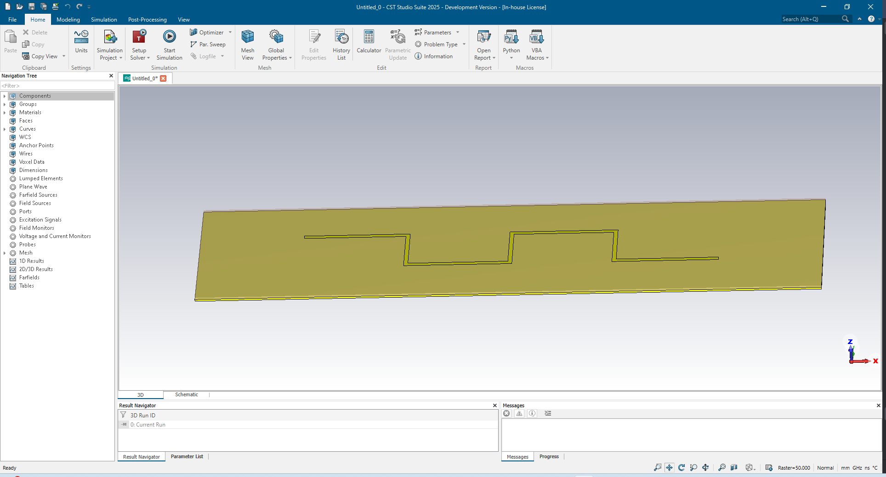
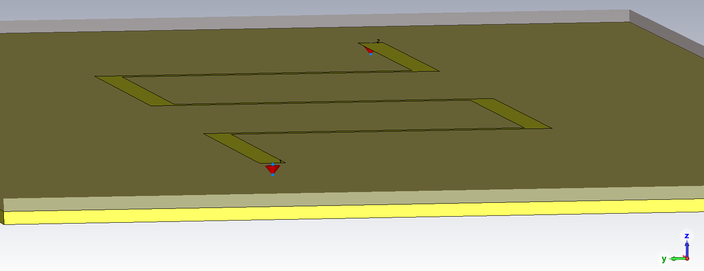
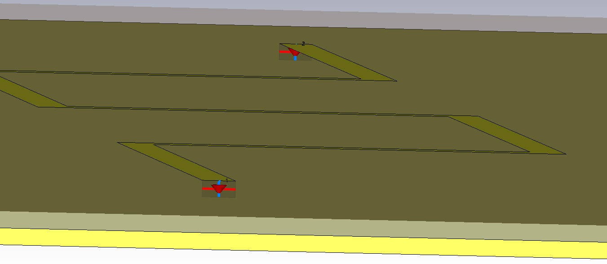
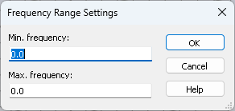

Simulation Setup¶
Before starting, please execute the preparations:
import cst.interface
from pathlib import Path
import tempfile
project_dir = Path(tempfile.mkdtemp())
print(f"Working in temporary directory: {project_dir}")
Example PCB geometry¶
In this section, we are going to quickly set up a simple pcb_geometry for later examples. It represents a simple printed circuit board (PCB) consisting of a ground plane, a substrate layer and a signal trace. Two new materials (Copper & FR-4) are created and assigned to the corresponding shapes. As you can see below, a VBA code is created by lining up the needed VBA codes for each step. The resulting code is then added to the History List.
def create_pcb_geometry(prj: cst.interface.Project):
"""
Create VBA code snippet for building example pcb geometry,
add add to 3D project.
"""
vba_snippet = """
With Material
.Reset
.Name "Copper (annealed)"
.Folder ""
.FrqType "static"
.Type "Normal"
.SetMaterialUnit "Hz", "mm"
.Epsilon "1"
.Mu "1.0"
.Kappa "5.8e+007"
.TanD "0.0"
.TanDFreq "0.0"
.TanDGiven "False"
.TanDModel "ConstTanD"
.KappaM "0"
.TanDM "0.0"
.TanDMFreq "0.0"
.TanDMGiven "False"
.TanDMModel "ConstTanD"
.DispModelEps "None"
.DispModelMu "None"
.DispersiveFittingSchemeEps "Nth Order"
.DispersiveFittingSchemeMu "Nth Order"
.UseGeneralDispersionEps "False"
.UseGeneralDispersionMu "False"
.FrqType "all"
.Type "Lossy metal"
.SetMaterialUnit "GHz", "mm"
.Mu "1.0"
.Kappa "5.8e+007"
.Rho "8930.0"
.ThermalType "Normal"
.ThermalConductivity "401.0"
.SpecificHeat "390", "J/K/kg"
.MetabolicRate "0"
.BloodFlow "0"
.VoxelConvection "0"
.MechanicsType "Isotropic"
.YoungsModulus "120"
.PoissonsRatio "0.33"
.ThermalExpansionRate "17"
.Colour "1", "1", "0"
.Wireframe "False"
.Reflection "False"
.Allowoutline "True"
.Transparentoutline "False"
.Transparency "0"
.Create
End With
With Material
.Reset
.Name "FR-4 (lossy)"
.Folder ""
.FrqType "all"
.Type "Normal"
.SetMaterialUnit "GHz", "mm"
.Epsilon "4.3"
.Mu "1.0"
.Kappa "0.0"
.TanD "0.025"
.TanDFreq "10.0"
.TanDGiven "True"
.TanDModel "ConstTanD"
.KappaM "0.0"
.TanDM "0.0"
.TanDMFreq "0.0"
.TanDMGiven "False"
.TanDMModel "ConstKappa"
.DispModelEps "None"
.DispModelMu "None"
.DispersiveFittingSchemeEps "General 1st"
.DispersiveFittingSchemeMu "General 1st"
.UseGeneralDispersionEps "False"
.UseGeneralDispersionMu "False"
.Rho "0.0"
.ThermalType "Normal"
.ThermalConductivity "0.3"
.SetActiveMaterial "all"
.Colour "0.94", "0.82", "0.76"
.Wireframe "False"
.Transparency "0.9"
.Create
End With
With Brick
.Reset
.Name "pcb"
.Component "component1"
.Material "Copper (annealed)"
.Xrange "0", "300"
.Yrange "0", "75"
.Zrange "-1.235", "-1.2"
.Create
End With
With Brick
.Reset
.Name "substrate_layer"
.Component "component1"
.Material "FR-4 (lossy)"
.Xrange "-0", "300"
.Yrange "-0", "75"
.Zrange "-1.2", "0"
.Create
End With
With Polygon
.Reset
.Name "polygon1"
.Curve "curve1"
.Point "50", "50"
.LineTo "100", "50"
.LineTo "100", "25"
.LineTo "150", "25"
.LineTo "150", "50"
.LineTo "200", "50"
.LineTo "200", "25"
.LineTo "250", "25"
.Create
End With
With TraceFromCurve
.Reset
.Name "signal"
.Component "component1"
.Material "Copper (annealed)"
.Curve "curve1:polygon1"
.Thickness "0.035"
.Width "2"
.RoundStart "False"
.RoundEnd "False"
.DeleteCurve "True"
.GapType "2"
.Create
End With
"""
prj.model3d.add_to_history("create example PCB geometry", vba_snippet)
This function is used to populate the new project:
de = cst.interface.DesignEnvironment.connect_to_any_or_new()
prj = de.new_mws()
create_pcb_geometry(prj)
The signal shape is created by a polygon curve starting at (50,50,0) and ending at (250,25,0). The curve is then used to create a trace with a width of 2. The resulting shape starts with an edge at [(49,50,0),(51,50,0)] and ends with one at [(250, 24, 0), (250, 26, 0)].
In future projects, we can call the create_pcb_geometry function and pass our project,
resulting in a PCB geometry like the one seen below.

Creating Discrete Ports¶
Using the previously created example geometry, we set up discrete ports between signal and ground.
# create a new Microwave Studio project
prj = de.new_mws()
# create the example environment
create_pcb_geometry(prj)
port_num = [1, 2]
# [((start point signal),(same point at height of pcb)),((end point signal),(same point at height of pcb))]
port_coords = [((50, 50, 0), (50, 50, -1.2)), ((250, 25, 0), (250, 25, -1.2))]
vba_code = ""
for num, coords in zip(port_num, port_coords):
discrete_port_vba = f"""
With DiscretePort
.Reset
.PortNumber "{num}"
.Type "SParameter"
.Label ""
.Folder ""
.Impedance "50.0"
.Voltage "1.0"
.Current "1.0"
.Monitor "True"
.Radius "0.0"
.SetP1 "False", "{coords[0][0]}", "{coords[0][1]}", "{coords[0][2]}"
.SetP2 "False", "{coords[1][0]}", "{coords[1][1]}", "{coords[1][2]}"
.InvertDirection "False"
.LocalCoordinates "False"
.Wire ""
.Position "end1"
.Create
End With
"""
vba_code += discrete_port_vba
prj.model3d.add_to_history("create discrete edge ports", vba_code)
As shown in Example geometry it is possible to combine multiple VBA code strings and add the resulting string to the History List in one go. We will use this in the current and in future examples as well.
In the example code above, after creating a new project as usual, we call the “create_pcb_geometry” function to set up our project. Next, we define our port numbers and the coordinates we want to create the ports at. For the coordinates, we use the center points of the start and end of the signal trace and the same points at the elevation of the ground plane. Finally, we assemble our VBA code for both discrete ports and add it to the History List. The resulting ports are shown in the image below.

Creating Discrete Face Ports¶
With a similar procedure as for the discrete edge ports, we can also create discrete face ports.
# create a new Microwave Studio project
prj = de.new_mws()
# create the example environment
create_pcb_geometry(prj)
# define the coordinates of the vertices
port1_coords = (((50, 49, 0), (50, 51, 0)), ((50, 49, -1.2), (50, 51, -1.2)))
port2_coords = (((250, 24, 0), (250, 26, 0)), ((250, 24, -1.2), (250, 26, -1.2)))
edge_coords = (port1_coords, port2_coords)
edges_vba = []
for coords in edge_coords:
vertex1 = coords[0][0]
vertex2 = coords[0][1]
vertex3 = coords[1][0]
vertex4 = coords[1][1]
add_edges_vba = f"""
Pick.AddEdge "{vertex1[0]}","{vertex1[1]}","{vertex1[2]}",\
"{vertex2[0]}","{vertex2[1]}","{vertex2[2]}"
Pick.AddEdge "{vertex3[0]}","{vertex3[1]}","{vertex3[2]}",\
"{vertex4[0]}","{vertex4[1]}","{vertex4[2]}"
"""
edges_vba.append(add_edges_vba)
port_num = [1, 2]
vba_code = ""
for num, edge_vba in zip(port_num, edges_vba):
discrete_port_vba = f"""
{edge_vba}
With DiscreteFacePort
.Reset
.PortNumber "{num}"
.Type "SParameter"
.Label ""
.Folder ""
.Impedance "50.0"
.VoltageAmplitude "1.0"
.CurrentAmplitude "1.0"
.Monitor "True"
.CenterEdge "True"
.SetP1 "True","0","0","0"
.SetP2 "True","0","0","1"
.LocalCoordinates "False"
.InvertDirection "False"
.UseProjection "False"
.ReverseProjection "False"
.FaceType "Linear"
.Create
End With
"""
vba_code += discrete_port_vba
prj.model3d.add_to_history("create discrete face ports", vba_code)
Instead of points, the discrete face ports are defined between edges.
So to create the discrete face ports, we need to pick the two edges first.
For this, the corresponding PickEdge commands for each port are created and put in a list.
We then iterate through the list of port numbers and the list of PickEdge commands so that we first pick the two needed
edges, and then create the corresponding discrete face port.
The created ports are shown in the image below.

Solver Setup¶
After defining ports, we can start setting up the solver.
# Set up a high-frequency solver with default values
min_freq = 0
max_freq = 1 # GHz
solver_vba = f"""
Solver.FrequencyRange "{min_freq}", "{max_freq}"
ChangeSolverType "HF Time Domain"
"""
prj.model3d.add_to_history("setup solver", solver_vba)
In the code above, the necessary steps for setting up a time domain solver with default values are bundled into one VBA code.
First, we need to set a frequency range. It is set to the two parameters (“min_freq” & “max_freq”) that are passed when calling the function. Next, we make sure that the solver type is set to “HF Time Domain”. Finally, the created VBA code is added to the History List of the passed project instance.
Run solver¶
After using the created function from Solver Setup to set up the solver, the solver is run.
prj.model3d.run_solver()
If the run was not successful, an exception would have been raised. This behavior will be shown further down in this section.
As we noted, the function run_solver is blocking, i.e. control has only returned to python after the solver was done.
It is also possible to start the solver, using the prj.model3d.start_solver() method.
Unlike run_solver(), start_solver() will not block the current thread.
To check if the solver is running, prj.model3d.is_solver_running() can be used.
When the solver is finished, prj.model3d.Solver.GetTotalSimulationTime() is used to read the simulation time of the
complete solver run. We also save the project, and note the path for reuse in the next session:
# get SimulationTime
solver_time = prj.model3d.Solver.GetTotalSimulationTime()
print(f"Solver finished after {solver_time} seconds")
# save the project
prj.save( project_dir / "simulation_done.cst", allow_overwrite=True)
cst_file_with_results = prj.filename()
print(f"Simulation done! Results are in file {cst_file_with_results=}")
print("For reuse in the next session please copy the following line:")
print(f"cst_file_with_results=r'{cst_file_with_results}'")
As mentioned before, when the solver does not finish successfully, start_solver will raise an exception.
Running the code below shows this behavior.
import cst.interface
de = cst.interface.DesignEnvironment.connect_to_any_or_new()
prj = de.new_mws()
# de.set_quiet_mode(False)
de.set_quiet_mode(True)
try:
prj.model3d.run_solver()
except RuntimeError:
print(prj.get_messages())
While in quiet/scripting mode, the DesignEnvironment won’t open any pop-up windows of any kind.
Using prj.get_messages() we can get the messages, that are in the Message Window of CST Studio Suite.
These tell the details on the successful or failed solver run.
[{'text': 'Solver run failed. Frequency range not set correctly.', 'type': 'ERROR'},
{'text': '1 error occurred.', 'type': 'ERROR'}]
If we try the same code, but insert de.set_quiet_mode(False) before running the solver,
we don’t run in to an error.
Instead, a pop-up is opened asking for the frequency range for the solver run.

If the frequency range is set, the solver will start after clicking on “OK”. Otherwise, the same exception is raised as before.